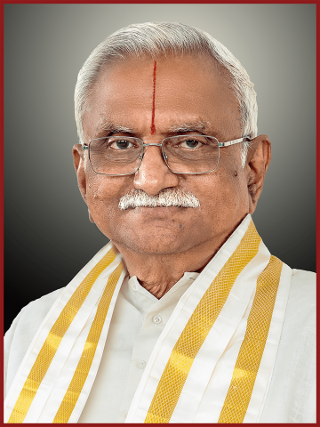

SHRI P.A.C. RAMASAMY RAJA
Founder (1894 – 1962)
On April 24, 1894, when a son was born to Poosapadi Chinnaiah Raja and Smt. Chittammal, there was great jubilation in the family. Sri Ramasamy Raja (PACR) dedicated his life to dharmic service, temple development, education, and cultural preservation.

SHRI P.R. RAMASUBRAMANIAH RAJAH
Chairman – Gurubhaktamani
Continuing the sacred legacy of Shastraprathista, the Chairman guides all institutions with a balance of traditional values and modern vision, ensuring continuity of dharma and service.